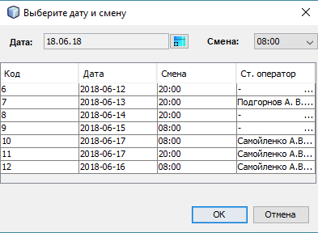
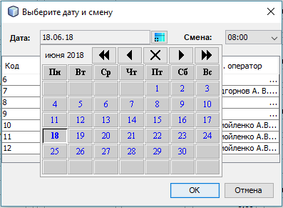

Описание операции "Открыть акт"
Операция по открыванию акта выполняется путем выбора соответствующего пункта меню или панели управления.
Имеется возможность открыть существующий акт для любой смены на любую дату.
Перед открыванием акта, приложение предложит выбрать дату и смену открываемого акта.
Выбор даты и смены осуществляется при помощи диалогового окна следующего вида:

Выбрать требуемую дату необходимо при помощи выпадающего календаря:

Также следует отметить, что для удобства создания и открывания актов, диалоговое окно содержит таблицу с перечнем уже созданных актов.
При изменении месяца в календаре выбора даты, таблица с перечнем актов автоматически обновится для выбраного месяца.